The "Electronics + Tools" segment of this class began with an introduction to microcontrollers, specifically the Metro M0 board. We first discussed the use of multimeters and applications of LEDs, resistors, and potentiometers. Using both the web platform Tinkercad and our kits, we built and measured a simple LED circuit.
Here is my circuit on Tinkercad, which I measured at two separate points (before and after the resistor).
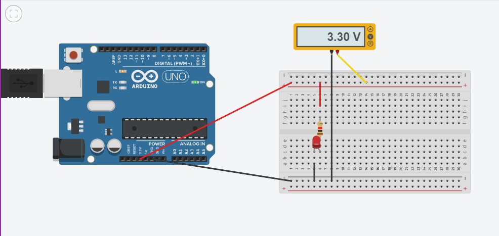
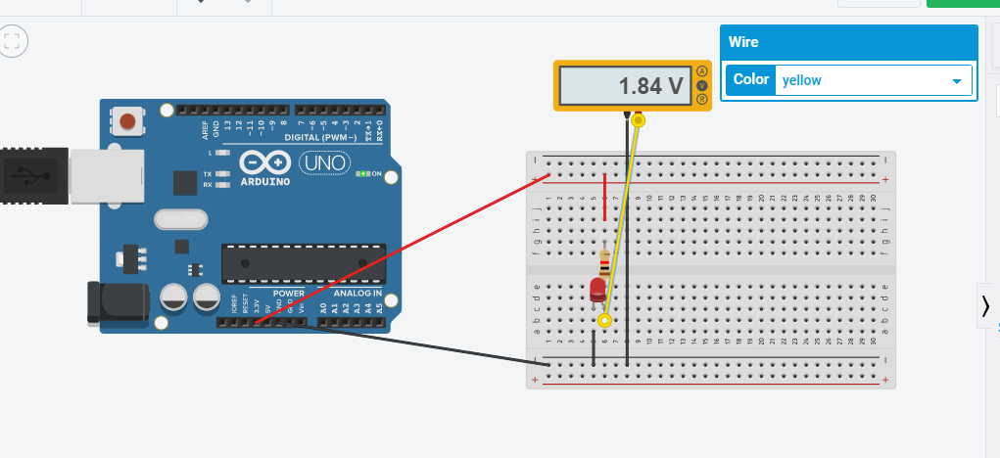
Here is my circuit in real life:
1. Before uploading the Blink program
2. After uploading the blink program
3. Another post-upload view
4. Measuring the voltage drop in my circuit.
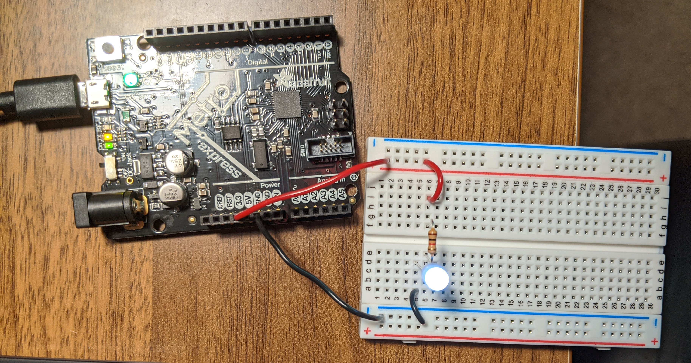
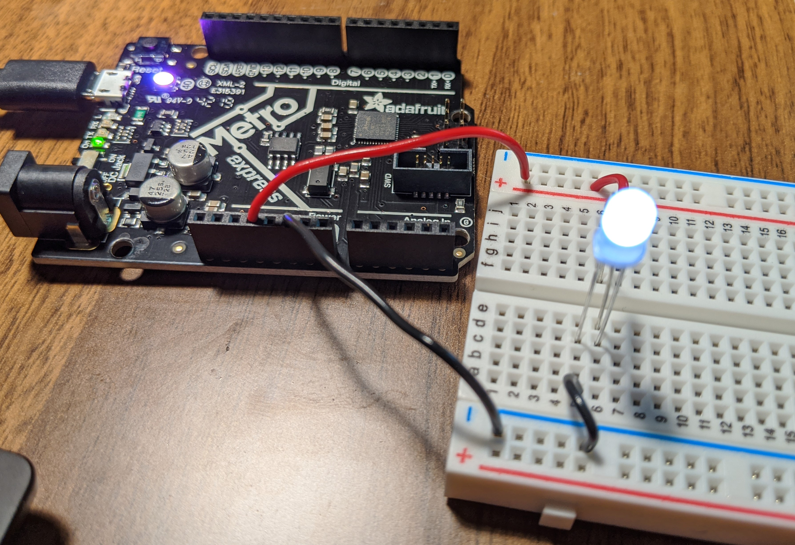
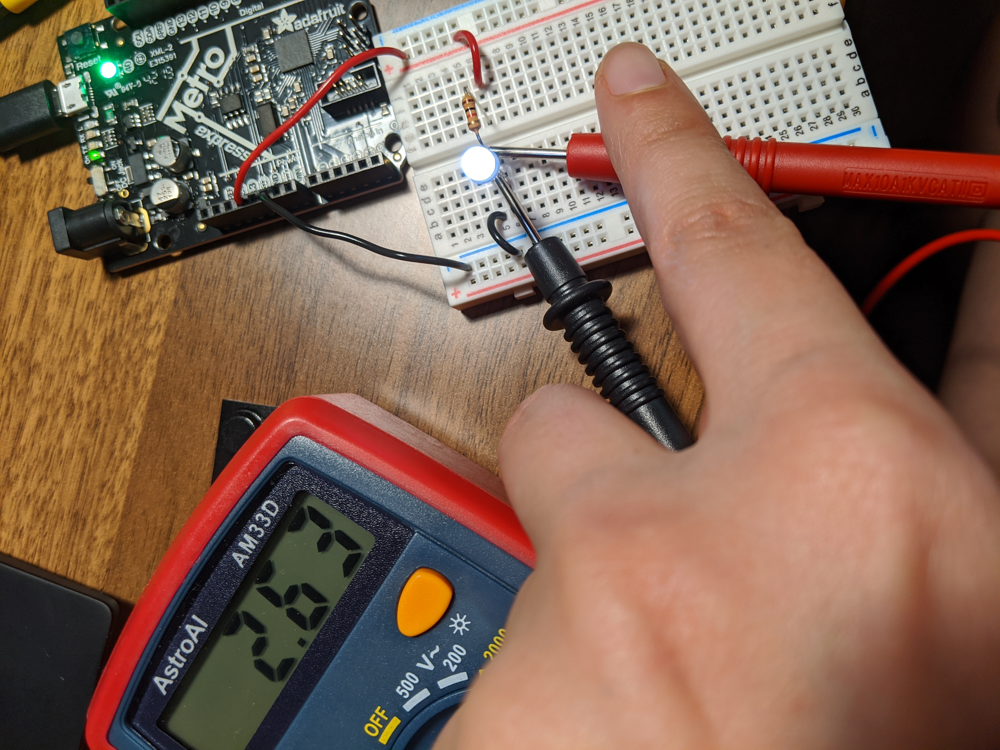
Ah, the Classic 'Blink' Program!
Measuring the Voltage Drop in This 3.3V System
Here's how I calculated the voltage drop in my circuit:
cathode to GND = 2.6 [measured at the end of resistor and GND]
3.3-2.6= 0.7V
V=I/R or V/R= I
where R = 1000 ohms
I = current = 0.0007A or 0.7mA
Resistance
My lovely partner is an electrician by trade and colorblind. He saw me counting lines on a resistor during lab and showed me how to measure the resistance using the multimeter-- essential given his colorblindness. So much faster! I also found this nifty resistor tool at DigiKey to help with decoding resistance.
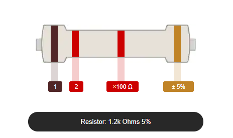
Measuring the Voltage of a Potentiometer!
I first built my adjustable circuit using a potentiometer and then uploaded the "AnalogReadSerial" program to assess how turning the knob adjusted the voltage of the system. Below I have my circuit in action and the output from the Arduino IDE. The high readout is 1023, while the low readout is close to zero.
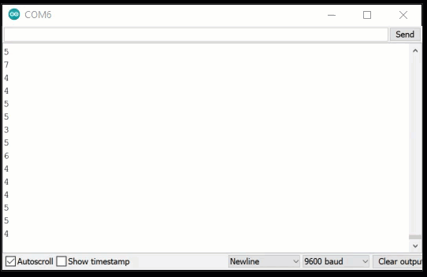
Resistors in Parallel & Series
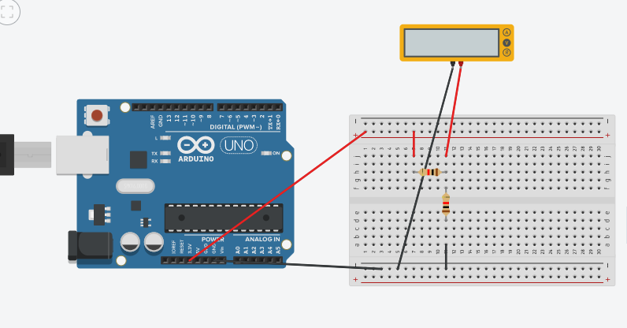
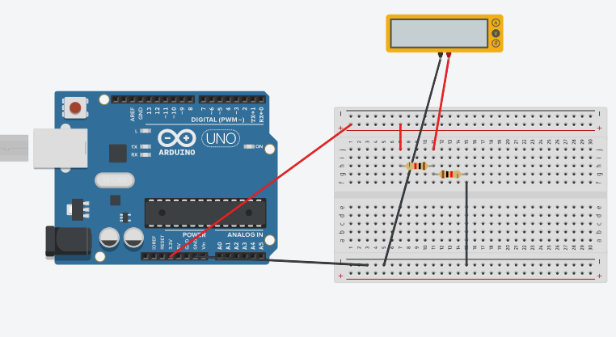
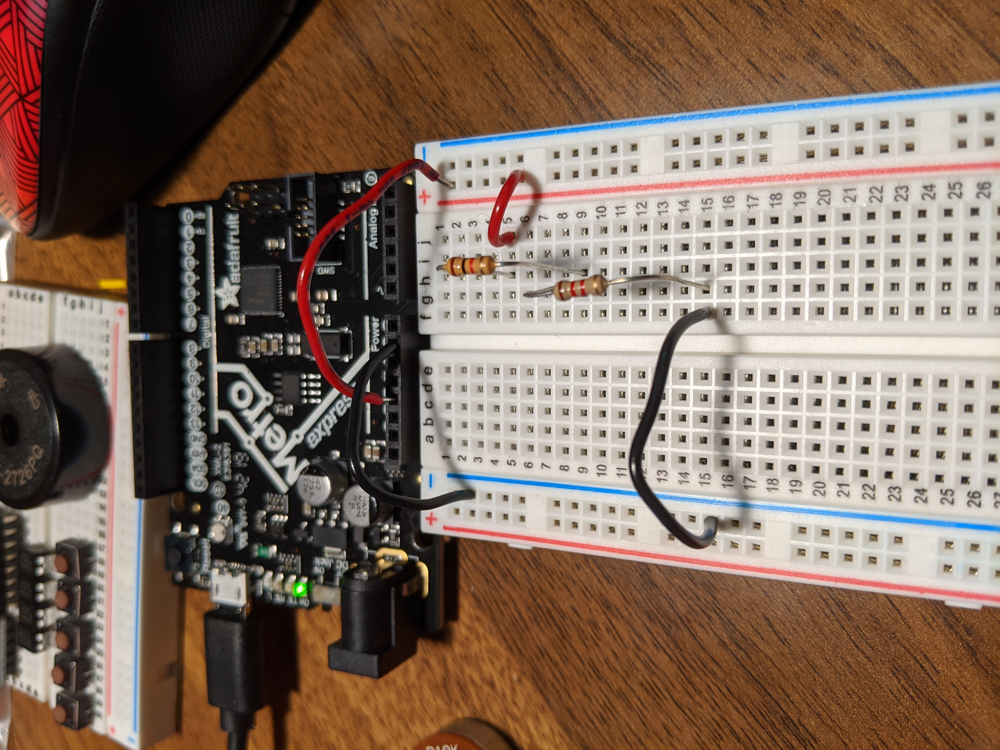
Making ServoMelon
I decided to make a circuit to help my fat rat Chiquito get some exercise using a Servomotor attached to a piece of watermelon. I uploaded Robert's code to the board. It only partially worked-- Chiquito attacked the servomotor. Luckily, I scooped him up before he could chew apart the components. Next time, I want to make a better attachment for the melon, a shield to protect the electronics parts from my rat's jaws, and make the motor a bit slower.
 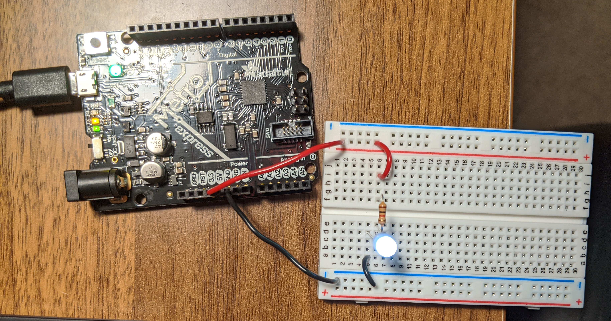
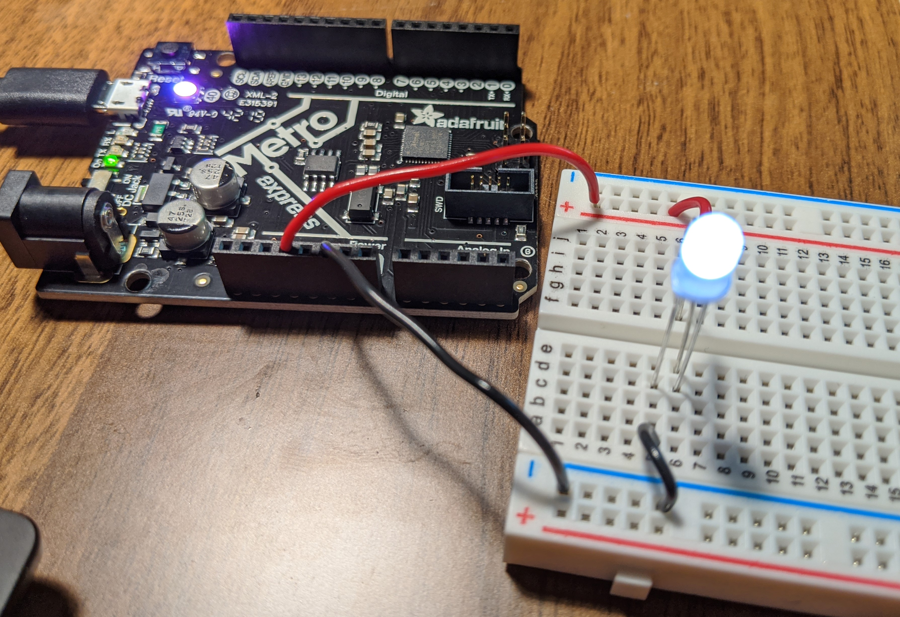
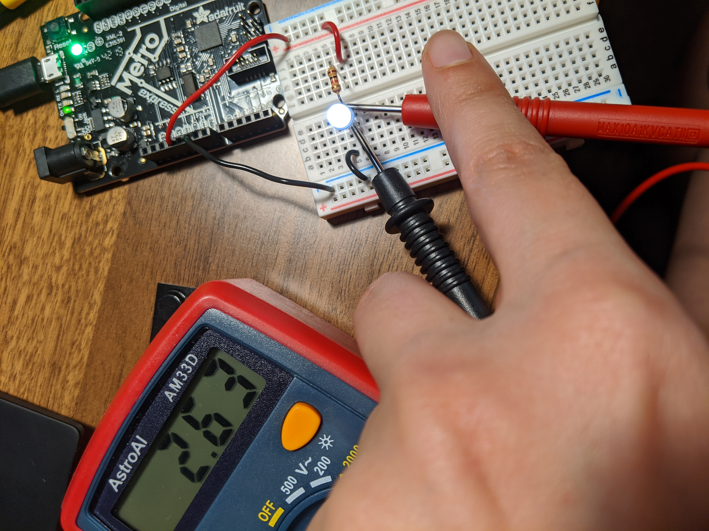
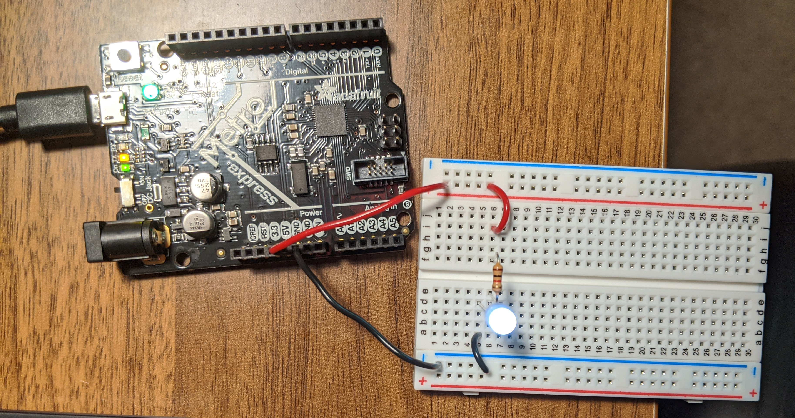
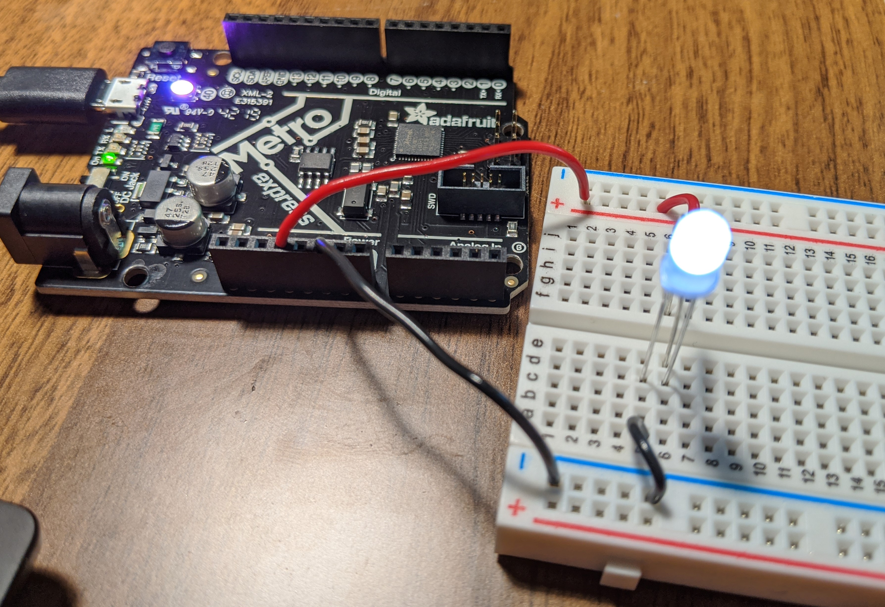
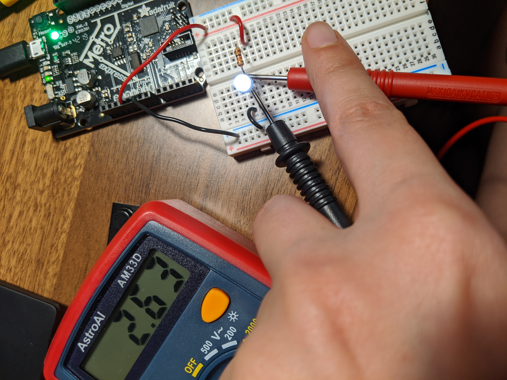